What this vignette covers
How far from a survey point does the landscape still matter, and how
sure can you be of that distance?
vignette("v01-quickstart", package = "multiScaleR") answers
the question for one count model. This guide is the full tour of the
same workflow. It explains what the kernel parameters mean, which
settings of kernel_prep() and
multiScale_optim() matter, how to tell a well-estimated
scale from a poorly estimated one, and how to compare candidate
models.
You will fit the Quick Start model again with one covariate too many,
find that covariate from the output, and remove it. You will then fit
negative binomial, zero-inflated, binary occurrence, N-mixture, and
occupancy models, and map a fitted model. Read the Quick Start first.
This guide assumes you can fit a generalized linear model with
glm() and read a raster with terra.
Know what the package estimates
The scale of effect is the distance over which a landscape variable influences a response measured at a survey location. Suppose you model songbird abundance and expect forest cover around each point to matter. Should you measure forest within 100 m, 500 m, or 2 km? The usual answer is to fit one model per candidate buffer radius and keep the best. That approach has two limits. The true scale can fall between the radii you tried, and a buffer gives a forest patch 499 m away the same weight as one 50 m away.
multiScaleR replaces the buffer with a kernel,
a function that gives nearby raster cells more weight than distant ones.
The kernel width, sigma, is in map units and sets how quickly the weight
declines with distance. Sigma is estimated from your data together with
the regression coefficients, so each scale of effect comes with a
standard error and a confidence interval.
Bayesian frameworks can also estimate scales of effect (e.g., Stuber
& Gruber 2020; Amirkhiz et al. 2023), and the R packages
Siland (Carpentier & Martin 2021) and
Scalescape (Lowe et al. 2022) estimate distance-weighted
landscape effects. multiScaleR supports models of class
glm, glm.nb, nlme (including
gls), lme4, and many unmarkedFit
classes. Other model classes may work when they have a suitable
update() method and are supported by the insight
package.
Understand the kernel and its parameters
Choose a kernel
Four kernels are available. In each, sigma sets the width. The exponential power kernel has a second parameter that sets the shape of the curve.
| Kernel | kernel = |
Weight of a cell at distance d | Parameters estimated |
|---|---|---|---|
| Gaussian | "gaussian" |
exp(-d2 / (2 sigma2)) | sigma |
| Negative exponential | "exp" |
exp(-d / sigma) | sigma |
| Exponential power | "expow" |
exp(-(d / sigma)shape) | sigma and shape |
| Fixed buffer | "fixed" |
Equal within the radius, zero beyond it | radius |
library(ggplot2) # adds a title to each panel
library(cowplot) # arranges the four panels on one page
# plot_kernel() draws a kernel without a fitted model.
# add_label = FALSE leaves out the text under each panel.
k_gaus <- plot_kernel(sigma = 300, kernel = "gaussian", add_label = FALSE)
k_exp <- plot_kernel(sigma = 300, kernel = "exp", add_label = FALSE)
k_expow <- plot_kernel(sigma = 300, kernel = "expow", add_label = FALSE,
shape = 5) # shape of the exponential power curve
k_fixed <- plot_kernel(sigma = 300, kernel = "fixed", add_label = FALSE)
plot_grid(k_gaus + ggtitle("Gaussian"),
k_exp + ggtitle("Negative exponential"),
k_expow + ggtitle("Exponential power, shape 5"),
k_fixed + ggtitle("Fixed buffer"))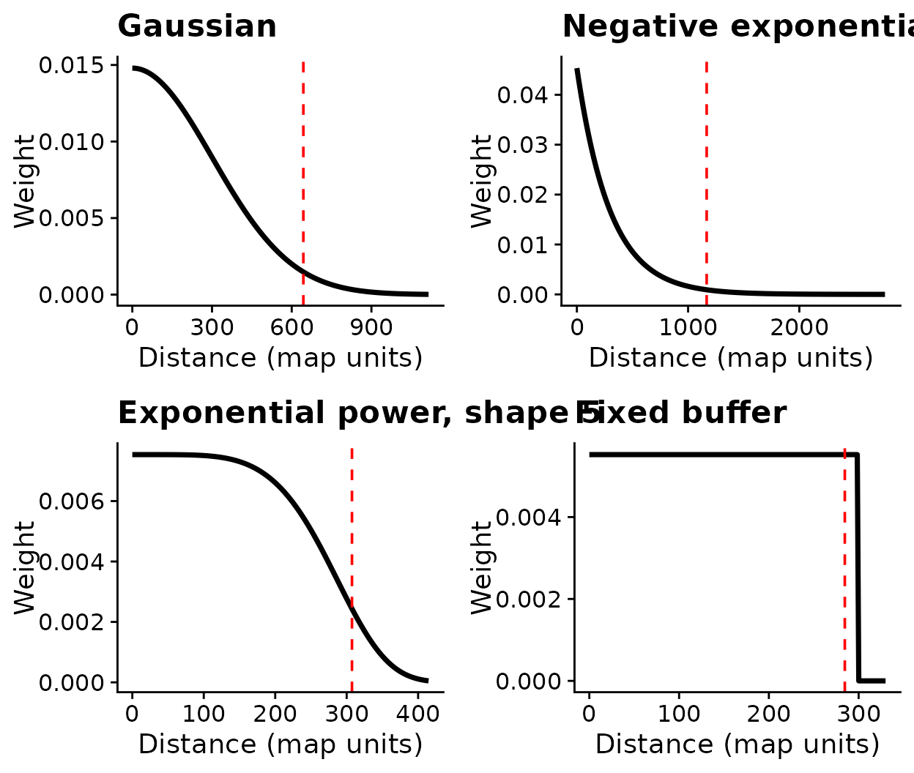
Weight against distance for the four kernels, each drawn with sigma = 300 m. The dashed line marks the radius that holds 90% of the kernel weight.
How to read these plots: Each curve shows the weight a raster cell receives at a given distance from the survey point. The Gaussian curve stays high near the point and then falls smoothly. The negative exponential drops fastest close to the point and keeps a long tail, so the horizontal axis of that panel runs much farther. A large shape value turns the exponential power kernel into a plateau with a steep edge, which approaches the fixed buffer.
Start with the Gaussian kernel, which is the default. The exponential power kernel is the most flexible, but in simulations it is prone to overfitting and its optimization can fail to converge. Reserve the other kernels for cases where you have a biological reason to test a different decay shape, and compare them with the Gaussian fit as shown in Compare kernels.
Convert sigma to an effective distance
Sigma is a parameter, not a radius. The same sigma means a different
reach under each kernel, so report the effective distance, the
radius of the circle around a point that holds a stated share of the
kernel weight (90% by default). kernel_dist() does the
conversion, with or without a fitted model.
# Radius (m) of the circle holding 90% of the weight, sigma = 300 m
kernel_dist(sigma = 300, kernel = "gaussian")
#> [1] 643.79
kernel_dist(sigma = 300, kernel = "exp")
#> [1] 1166.92
# The same Gaussian kernel with 95% of the weight
kernel_dist(sigma = 300, kernel = "gaussian", prob = 0.95)
#> [1] 734.32
# Line-based definition: distance holding 90% of the weight along a transect
kernel_dist(sigma = 300, kernel = "gaussian", dimension = "1d")
#> [1] 493.46How to read the output: A Gaussian kernel with sigma = 300 m places 90% of its weight within about 644 m, or 2.15 times sigma. A negative exponential kernel with the same sigma reaches about 1,167 m. The last line uses an older definition that measures along a line through the point and gives a shorter distance, about 1.65 times sigma. The circle is the default because rings farther from a point contain more cells. Whichever you report, state the definition and the share of weight.
An effective distance describes an ideal kernel on an unbounded
plane. The share of weight your data actually used can differ near a
raster edge, around missing cells, or when max_D cuts the
kernel short.
Prepare the data
Load the running example
This guide uses the data from the Quick Start. Counts at 100 survey points were simulated from two of three landscape layers.
data("landscape_counts") # counts and one site-level covariate, 100 rows
dat <- landscape_counts
data("surv_pts") # survey locations (an sf object from the package)
pts <- vect(surv_pts) # convert to a terra SpatVector
# Three landscape layers on one 20 m grid
land_rast <- rast(system.file("extdata", "landscape.tif",
package = "multiScaleR"))| Quantity | True value |
|---|---|
| Intercept, on the log scale | 0.25 |
Effect of site, a covariate measured at
the survey point |
0.3 |
Effect and sigma of land1, a binary
habitat layer |
-0.5, 250 m |
Effect and sigma of land2, a continuous
layer |
0.7, 500 m |
land3, a continuous layer |
No effect |
Extract the landscape around each point
kernel_prep() does two jobs. It extracts every raster
cell within max_D map units of each survey point, along
with the distance to that cell. It then computes a first set of
kernel-weighted covariates from a starting sigma of
max_D / 2, which you use to fit the starting model.
kernel_inputs <- kernel_prep(
pts = pts, # survey locations
raster_stack = land_rast, # landscape layers to summarize
max_D = 1700, # largest distance (m) searched around a point
kernel = "gaussian", # shape of the distance-decay function
verbose = FALSE
)
kernel_inputs
#>
#> There are 100 observations at 3 spatial covariate(s):
#> land1 land2 land3
#>
#> The specified kernel is:
#> gaussian
#>
#> Number of elements:
#> 13111
#> Distance binning:
#> enabled (256 distance bins per covariate)
#> Minimum Distance:
#> 20
#> Maximum Distance:
#> 1700
#> Unit Conversion:
#> 1700How to read the output: The object holds 100 survey
points and three covariates, one per raster layer. “Number of elements”
counts the raster cells extracted around the first survey point. The
minimum distance is the cell size (20 m) and the maximum distance is
your max_D. The optimizer searches for sigma between those
two distances.
The arguments below carry the decisions that matter.
| Argument | Default | What it controls |
|---|---|---|
max_D |
None | The search limit, in map units. Set it beyond any scale
you consider plausible. If multiScale_optim() warns that an
estimate is near max_D, increase it and run
kernel_prep() again |
kernel |
"gaussian" |
The decay function. It is fixed here, so comparing
kernels means one kernel_prep() call per kernel |
bin |
TRUE |
Summarizes the extracted cells into distance bins. The
optimizer then works with the bins, so its speed no longer depends on
max_D. bin = FALSE forces the exact
cell-by-cell calculation |
nbins |
256 |
Number of distance bins. The default reproduces the exact estimates to several significant figures |
store_cell_data |
TRUE |
Keeps the cell values after binning. FALSE
keeps only the bins, which is enough to optimize, profile, and
project |
sigma |
max_D / 2 |
Sigma used to compute the covariates for the starting model, in map units. It does not set where the search starts. The default is recommended |
A large max_D costs extraction time and memory, not
optimization time. If memory is the constraint, drop the cell
values.
# Same preparation, keeping only the distance bins
lean_inputs <- kernel_prep(pts = pts, raster_stack = land_rast,
max_D = 1700, kernel = "gaussian",
store_cell_data = FALSE, verbose = FALSE)
# Size of each object in megabytes
c(full = as.numeric(object.size(kernel_inputs)),
lean = as.numeric(object.size(lean_inputs))) / 1e6
#> full lean
#> 58.666440 1.257416How to read the output: The lean object is a small
fraction of the full one. Lean storage is available only when every
covariate is kernel-weighted. Landscape and surface metrics need the
cell values, and kernel_prep() keeps them automatically
(see
vignette("v04-landscape-metrics", package = "multiScaleR")).
For surveys from several years with a different map each year, use
kernel_prep_by_group() as shown in
vignette("v06-year-specific-rasters", package = "multiScaleR").
Fit the model
Fit a starting model
The kernel-weighted covariates are in
kernel_inputs$kernel_dat, centered and scaled to a mean of
zero and a standard deviation of one. Combine them with the response and
fit the model you intend to optimize. multiScale_optim()
inherits its formula, family, and any random effects, so settle the
model structure here. The Quick Start fitted the two layers that affect
the counts. This model adds land3, which does not.
df <- data.frame(dat, kernel_inputs$kernel_dat)
# Starting model with all three landscape layers
mod_full <- glm(counts ~ site + land1 + land2 + land3,
family = poisson(),
data = df)Write the formula directly in the fitting call. The package refits
the model many times, and a formula or data set that exists only inside
a function or loop may not be found again. When you need full control of
the refit, pass your own function through the refit_fn
argument of multiScale_optim().
Estimate the scales of effect
opt_full <- multiScale_optim(fitted_mod = mod_full,
kernel_inputs = kernel_inputs,
verbose = FALSE) # no progress messagesThe search starts every sigma at one quarter of the way from five
cell widths to 80% of max_D, which is 415 m here, unless
you supply starting values or request screened starts (see Choose a start strategy). This fit
takes under a second. Slower models, such as mixed or
unmarked models, can run in parallel with
n_cores. Each worker holds its own copy of the inputs, so
check the memory cost first.
# Estimated memory for three workers, and the largest safe worker count
estimate_multiscale_ram(kernel_inputs, fitted_mod = mod_full, n_cores = 3)The report gives a recommended maximum number of workers and a peak
memory estimate for the count you requested.
multiScale_optim() stops with an error when
n_cores exceeds the limit set by available memory. It does
not lower the count for you. Preparing the inputs with
store_cell_data = FALSE is the usual way to bring a large
problem under the limit.
Read the summary
summary(opt_full)
#>
#> Call:
#> multiScale_optim(fitted_mod = mod_full, kernel_inputs = kernel_inputs,
#> verbose = FALSE)
#>
#>
#> Kernel used:
#> gaussian
#>
#> ***** Optimized Scale of Effect *****
#>
#> Mean SE 2.5% 97.5%
#> land1 248.2048 34.16873 180.3713 316.0383
#> land2 538.5196 50.76490 437.7385 639.3007
#> land3 538.9062 309.85559 20.0000 1154.0473
#>
#>
#> ====================================
#>
#> ***** Optimized Scale of Effect -- Distance *****
#> Scale distances (map units) at 90%, two definitions.
#>
#> 2D, radius of the circle for the ideal untruncated kernel (selected):
#> Mean 2.5% 97.5%
#> land1 532.64 387.07 678.21
#> land2 1155.64 939.37 1371.92
#> land3 1156.47 42.92 2476.55
#>
#> 1D, along a line through the point (comparison):
#> Mean 2.5% 97.5%
#> land1 408.26 296.68 519.84
#> land2 885.79 720.02 1051.56
#> land3 886.42 32.90 1898.24
#>
#>
#> ====================================
#>
#> ***** Fitted Model Summary *****
#>
#>
#> Call:
#> glm(formula = counts ~ site + land1 + land2 + land3, family = poisson(),
#> data = data)
#>
#> Coefficients:
#> Estimate Std. Error z value Pr(>|z|)
#> (Intercept) 0.37646 0.09260 4.065 4.80e-05 ***
#> site 0.06423 0.09891 0.649 0.5161
#> land1 -0.50811 0.08014 -6.340 2.29e-10 ***
#> land2 0.75712 0.09940 7.617 2.60e-14 ***
#> land3 0.18075 0.09993 1.809 0.0705 .
#> ---
#> Signif. codes: 0 '***' 0.001 '**' 0.01 '*' 0.05 '.' 0.1 ' ' 1
#>
#> (Dispersion parameter for poisson family taken to be 1)
#>
#> Null deviance: 224.24 on 99 degrees of freedom
#> Residual deviance: 106.99 on 95 degrees of freedom
#> AIC: 313.67
#>
#> Number of Fisher Scoring iterations: 5
#>
#>
#> WARNING!!!
#> The estimated scale of effect approaches or exceeds the current search extent.
#> Consider increasing max_D in `kernel_prep` to >= 1772.84 to ensure accurate estimation of scale.
#>
#>
#> WARNING!!!
#> The standard error of one or more `sigma` estimates is >= 50% of the estimated mean value.
#> Carefully assess whether or not this variable is meaningful in your analysis and interpret with caution.
#>
#>
#>
#> ***** Follow-up recommendation *****
#> Recommended `max_D`: 1772.84
#> Recommended starting `sigma` values:
#> land1 land2 land3
#> 248.2048 538.5196 538.9062
#>
#> Action:
#> Refit from the optimized parameters and address the flagged diagnostics.How to read the summary() output: The
Quick Start describes the four blocks. Here, attention goes to the parts
that flag a problem.
-
Standard errors and intervals for sigma. For
land1andland2the standard error is a small fraction of the estimate. Forland3it is more than half the estimate, and the interval runs from the cell size to more than 1,100 m. The data say almost nothing about the scale ofland3. -
Two distance tables. The table marked “selected” is
the radius of the circle that holds 90% of the kernel weight. The second
is the line-based definition from Convert sigma to an
effective distance. Both come from the same sigma.
summary(opt_full)$opt_dist_2dand$opt_dist_1dreturn them by name if a script needs one definition regardless of the display. -
Warnings. The first warning reports that an
effective distance approaches the search limit and gives the
max_Dthat would cover it. The second names the precision problem, a sigma standard error that is at least 50% of its estimate. -
Follow-up recommendation. These are the
max_Dand starting sigma values to use if you refit.
A sigma that drifts toward max_D with a wide interval
has two possible causes. Either the true scale is larger than the area
you extracted, or the covariate has little or no relationship with the
response. To tell them apart, look at the regression table. The
coefficient for land3 is small, and its standard error is
more than half its size. A covariate without an effect gives the
optimizer nothing to hold onto, and sigma wanders.
Remove a covariate the data do not support
Because the data are simulated, you know that land3 has
no effect. With real data you would reach the same decision from the
summary above, the profile in Check how well each
scale is identified, and the model comparison in Compare models.
# Starting model without land3 (the Quick Start model)
mod <- glm(counts ~ site + land1 + land2,
family = poisson(),
data = df)
opt <- multiScale_optim(fitted_mod = mod,
kernel_inputs = kernel_inputs,
verbose = FALSE)
opt$scale_est # sigma and its standard error, in meters
#> Mean SE
#> land1 238.4880 33.12452
#> land2 499.5767 47.47055
round(kernel_dist(opt)) # radius holding 90% of the kernel weight (m)
#> Mean 2.5% 97.5%
#> land1 512 371 653
#> land2 1072 870 1274
round(exp(coef(opt$opt_mod)), 2) # multiplicative change in expected count
#> (Intercept) site land1 land2
#> 1.48 1.19 0.61 1.87How to read the output: No warnings remain. The
sigma estimates of 238 m and 500 m sit close to the true values of 250 m
and 500 m. In distance terms, land1 acts within about 512 m
of a survey point and land2 within about 1,072 m. The
landscape covariates are standardized, so each coefficient describes a
change of one standard deviation. One standard deviation more
kernel-weighted land1 multiplies the expected count by
0.61, and the same increase in land2 multiplies it by
1.87.
Choose an interval for sigma
By default, the sigma interval comes from the delta method. It uses the curvature of the likelihood at the estimate and assumes the likelihood is symmetric around it. A profile-likelihood interval makes no such assumption. It moves sigma away from the estimate, refits the other parameters at each step, and stops where the log-likelihood has dropped by 1.92 units, the cutoff for a 95% interval.
# Delta-method limits (the default), in meters
round(summary(opt)$opt_scale)
#> Mean SE 2.5% 97.5%
#> land1 238 33 173 304
#> land2 500 47 405 594
# Profile-likelihood limits. The standard error column does not change
round(summary(opt, profile = TRUE)$opt_scale)
#> Mean SE 2.5% 97.5%
#> land1 238 33 174 319
#> land2 500 47 413 604How to read the output: The two methods nearly agree
on the lower limit for land1. The profile-likelihood upper
limit is about 15 m higher, because the likelihood falls away more
slowly above the estimate than below it. For land2 both
limits move up by about 10 m. A symmetric interval cannot show either
pattern.
Request profile-likelihood intervals when
- an estimate is near
max_D, - the delta-method interval is wide relative to the estimate,
- the sample is small (fewer than about 75 sites), or
- you will report the interval in a manuscript.
For a fixed-buffer kernel, a landscape metric, or an unweighted
surface metric, the likelihood changes in steps as whole cells enter the
neighborhood. Curvature is not a useful measure there, and the summary
shows NA for the standard error and interval. Inspect the
profile from profile_sigma() instead.
vignette("v09-estimates-and-intervals", package = "multiScaleR")
explains what each interval includes and what it leaves out.
What this means for your study. A wide sigma interval is a result, not a nuisance. It tells you that the data cannot separate a local effect from a broad one for that covariate. Report the interval, and do not build an ecological explanation on the point estimate alone.
Plot the kernels and the effects
plot(opt)
Fitted kernels for land1 and
land2.
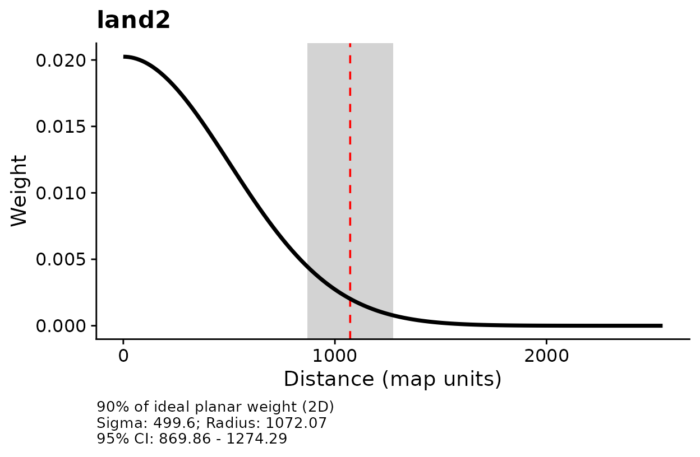
Fitted kernels for land1 and
land2.
How to read these plots: Each panel is the fitted version of the curves in Choose a kernel. The dashed line is the effective distance and the gray band is its 95% confidence interval. Three lines of text sit under each panel. The first states the share of kernel weight and the distance definition. The second gives sigma and the effective distance, and the third gives the 95% confidence interval for that distance. Keep in mind that the dashed line marks a radius. It does not split the area under the plotted curve 90 to 10.
The text helps while you explore a fit. For a manuscript figure, set
add_label = FALSE to remove it. The line and the band
stay.
# prob changes the share of weight. dimension = "1d" gives the line-based distance
plot(opt, prob = 0.99, add_label = FALSE)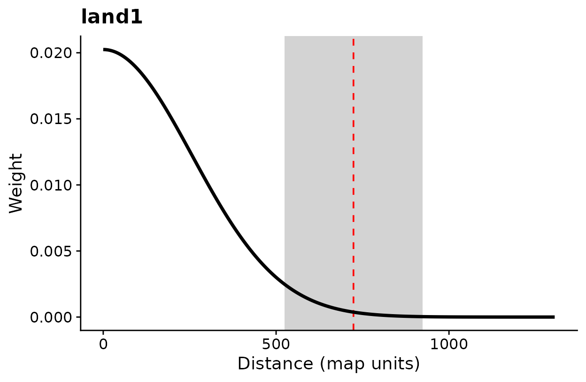
The same kernels with the radius that holds 99% of the weight, and no text under the panels.
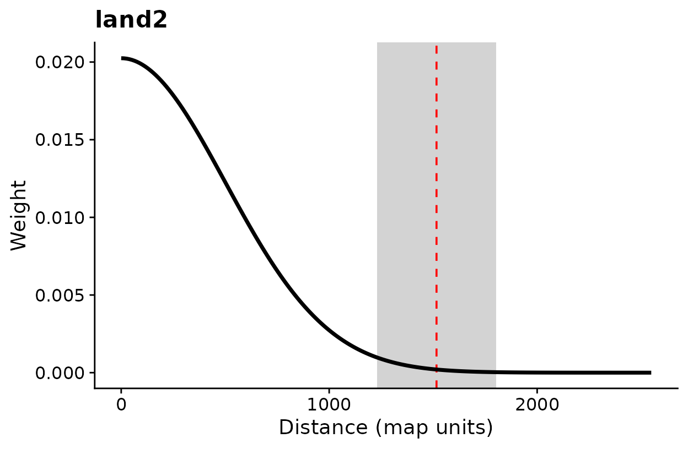
The same kernels with the radius that holds 99% of the weight, and no text under the panels.
plot_marginal_effects() draws the expected response
across each covariate, with the other covariates held at their
means.
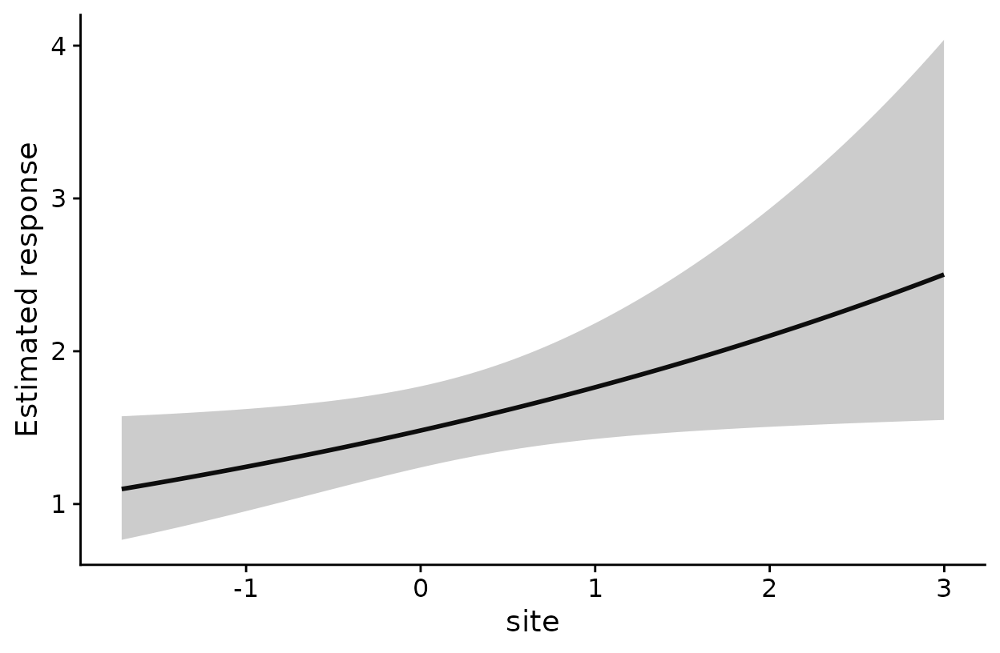
Expected count across each covariate in the reduced model.
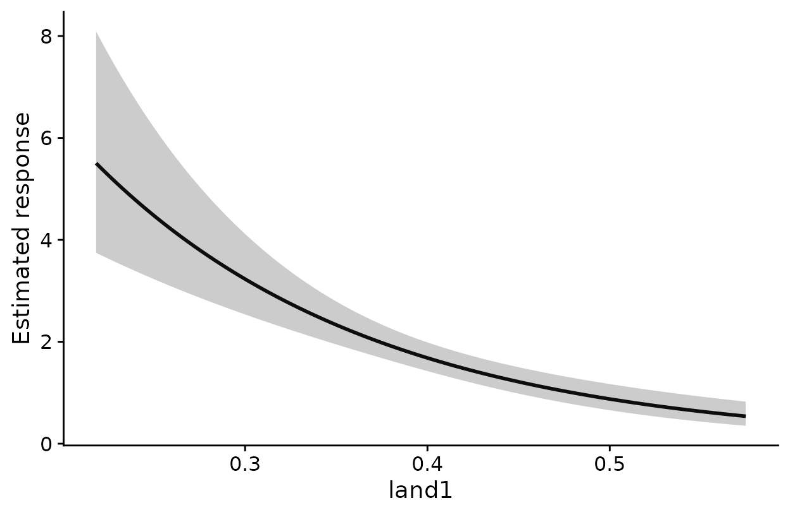
Expected count across each covariate in the reduced model.
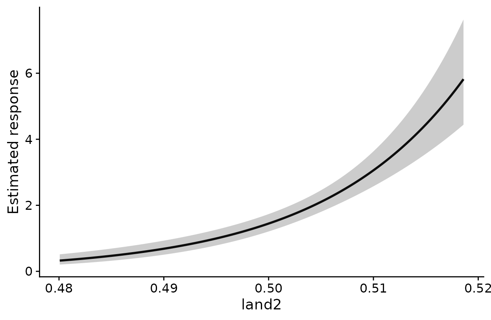
Expected count across each covariate in the reduced model.
How to read these plots: The vertical axis is the
expected count. The horizontal axis is the covariate in its own units,
which for land1 is the kernel-weighted proportion of
habitat around a point. Counts fall as habitat within the fitted kernel
increases and rise with land2. The shaded band is a 95%
confidence band that treats the estimated scales as known.
Check how well each scale is identified
profile_sigma() refits the model across a grid of sigma
values for one covariate at a time, holding the other scales at their
estimates. The grid is log-spaced by default, with more values at small
scales where the fit changes fastest. Profiling the full model shows
what an unidentified scale looks like.
prof_full <- profile_sigma(opt_full, n_pts = 15, # 15 sigma values per covariate
verbose = FALSE)
plot(prof_full)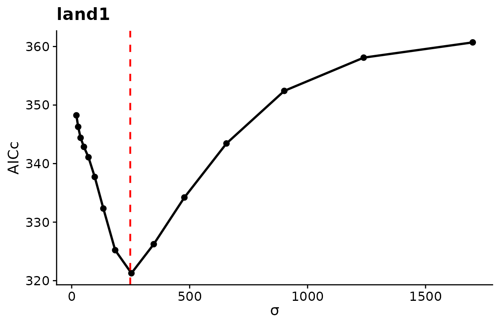
AICc across candidate sigma values for each covariate in the full model. The dashed line marks the estimate.
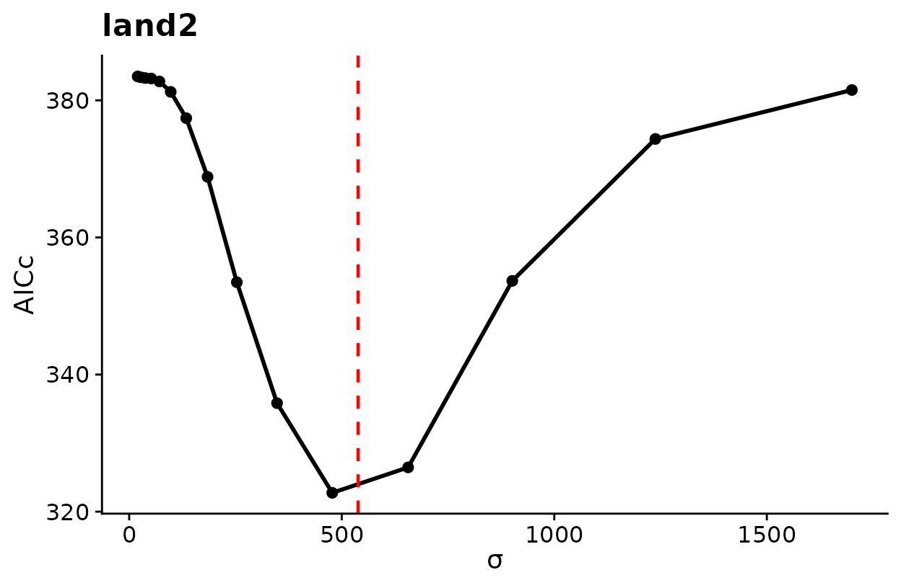
AICc across candidate sigma values for each covariate in the full model. The dashed line marks the estimate.
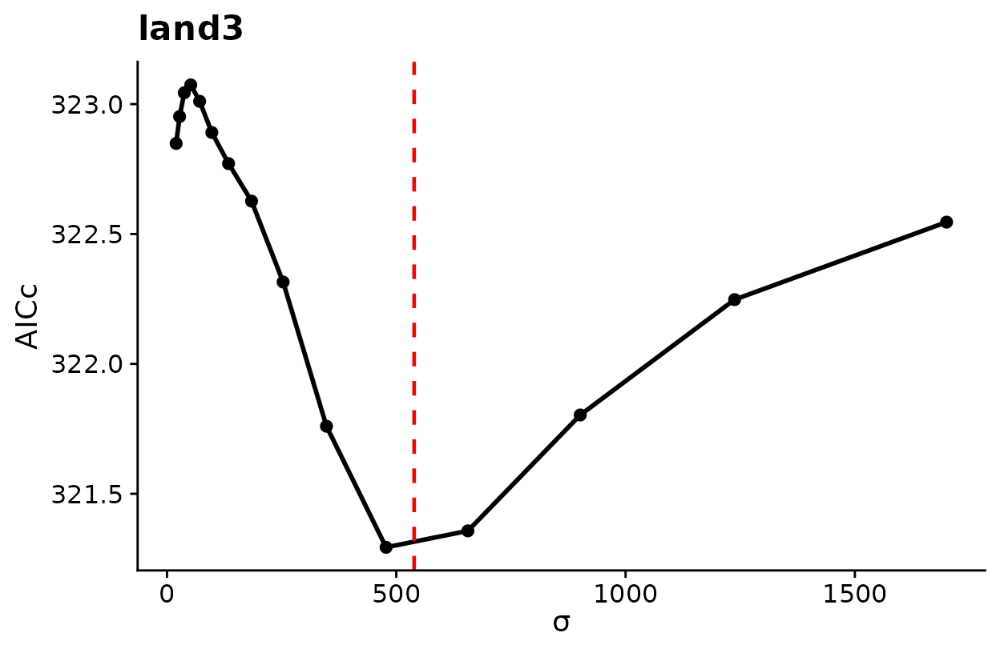
AICc across candidate sigma values for each covariate in the full model. The dashed line marks the estimate.
How to read these plots: Lower AICc means better
support. Read the vertical axis before the shape of the curve. For
land1 and land2, AICc rises by tens of units
on either side of a clear minimum, so the data identify those scales.
For land3 the curve also has a minimum, but the whole axis
spans less than two AICc units. Every sigma between the cell size and
max_D fits about equally well.
Use this rule. A trough several AICc units deep near the dashed line
means the scale is identified. A flat profile means the data do not
constrain that scale. When the profile keeps falling toward
max_D, the search limit set the estimate and the data did
not. With several covariates, n_cores profiles them in
parallel.
Choose a start strategy
The optimizer follows the likelihood uphill from its starting values.
When the likelihood has several peaks or flat steps, a single start can
stop short of the best fit. The fixed-buffer kernel shows the problem,
because its likelihood changes only when a whole cell enters or leaves
the buffer. For that reason multiScale_optim() screens
starting values by default when the kernel is fixed, and uses one start
for the smooth kernels.
# One kernel_prep() call per kernel
fixed_inputs <- kernel_prep(pts = pts, raster_stack = land_rast,
max_D = 1700, kernel = "fixed", verbose = FALSE)
# One start, the default for the smooth kernels
opt_fixed_single <- multiScale_optim(mod, fixed_inputs, verbose = FALSE,
start_strategy = "single")
# Default for a fixed kernel: scan sigma values, run short trial fits, then
# optimize once from the best of them
set.seed(1) # the trial starts are jittered at random
opt_fixed <- multiScale_optim(mod, fixed_inputs, verbose = FALSE)
# Buffer radius (m) and log-likelihood from each strategy
data.frame(start = c("single", "screen"),
land1 = c(opt_fixed_single$scale_est["land1", "Mean"],
opt_fixed$scale_est["land1", "Mean"]),
land2 = c(opt_fixed_single$scale_est["land2", "Mean"],
opt_fixed$scale_est["land2", "Mean"]),
logLik = c(logLik(opt_fixed_single$opt_mod),
logLik(opt_fixed$opt_mod)))
#> start land1 land2 logLik
#> 1 single 415.0000 415.0000 -175.0376
#> 2 screen 443.1714 756.8671 -154.4008How to read the output: A higher log-likelihood is a
better fit. The single start returned the same radius for both layers
and a log-likelihood about 21 units below the screened start. It had
stalled, and multiScale_optim() warns when a search returns
its starting values. The screened start found buffers of about 443 m and
757 m. Its final search could not move either, so these radii are the
best screened candidate, and a warning says so.
diagnostics(opt_fixed)$start_stall records the details.
A screened start first scans screen_n_sigma log-spaced
sigma values for each covariate. It then runs
screen_n_jitter short optimizations of
screen_maxit iterations from randomly shifted candidates
and launches one full optimization from the best of them. It is already
the default for the fixed-buffer kernel. Request it with
start_strategy = "screen" for landscape metrics, for models
with several landscape covariates, and whenever two runs disagree. For
the full Gaussian model above, a screened start returns the same
estimates as the default.
You can also supply starting values through par. The
optimizer works with sigma divided by max_D, so starting
land1 at 250 m and land2 at 500 m is
par = c(250, 500) / kernel_inputs$unit_conv.
Compare models
Estimating a scale of effect uses information from the data, so each
estimated sigma counts as one parameter. The AIC that glm()
prints for the final model omits those parameters.
aic_tab() and bic_tab() include them, which
makes models with different numbers of landscape covariates
comparable.
Compare kernels
# Prepare the same data with the two remaining kernels
exp_inputs <- kernel_prep(pts = pts, raster_stack = land_rast,
max_D = 1700, kernel = "exp", verbose = FALSE)
expow_inputs <- kernel_prep(pts = pts, raster_stack = land_rast,
max_D = 1700, kernel = "expow", verbose = FALSE)
# Refit the reduced model with each kernel
opt_exp <- multiScale_optim(mod, exp_inputs, verbose = FALSE)
opt_expow <- multiScale_optim(mod, expow_inputs, verbose = FALSE)
# Rank the four kernels by AICc. opt_fixed is the screened fit from above
aic_tab(list(opt, opt_exp, opt_expow, opt_fixed),
mod_names = c("Gaussian", "Negative exponential",
"Exponential power", "Fixed buffer"))
#>
#> Model selection based on AICc:
#>
#> K AICc Delta_AICc AICcWt Cum.Wt LL
#> Gaussian 6 319.15 0.00 0.59 0.59 -153.12
#> Exponential power 8 320.95 1.81 0.24 0.83 -151.69
#> Fixed buffer 6 321.70 2.56 0.16 1.00 -154.40
#> Negative exponential 6 329.67 10.52 0.00 1.00 -158.38How to read the table: K is the number
of estimated parameters. The Gaussian model has four regression
coefficients and two sigma values. The exponential power model adds a
shape parameter for each covariate, which makes eight. LL
is the log-likelihood, Delta_AICc is the distance from the
best model, and AICcWt is the relative support for each
model within this set. A common rule treats models within 2 AICc units
of the best as having comparable support.
The Gaussian kernel ranks first, as it should for data simulated from one. Although the exponential power kernel has the highest log-likelihood, it pays for two extra parameters. The negative exponential kernel has little support. In practice the kernels often lead to the same ecological conclusions, which is one reason the Gaussian kernel is the default.
Compare model structures
The more common question is which covariates belong in the model. Fit
each candidate, estimate its scales, and rank the set. A model without
landscape covariates needs no optimization and enters the list as an
ordinary glm.
# Candidate starting models
mod_land <- glm(counts ~ land1 + land2, family = poisson(), data = df)
mod_land1 <- glm(counts ~ land1, family = poisson(), data = df)
mod_land2 <- glm(counts ~ land2, family = poisson(), data = df)
mod_site <- glm(counts ~ site, family = poisson(), data = df)
# Estimate the scales of effect for each landscape model
opt_land <- multiScale_optim(mod_land, kernel_inputs, verbose = FALSE)
opt_land1 <- multiScale_optim(mod_land1, kernel_inputs, verbose = FALSE)
opt_land2 <- multiScale_optim(mod_land2, kernel_inputs, verbose = FALSE)
model_set <- list(opt_full, opt, opt_land, opt_land1, opt_land2, mod_site)
model_names <- c("site + land1 + land2 + land3", "site + land1 + land2",
"land1 + land2", "land1", "land2", "site")
aic_tab(model_set, mod_names = model_names) # ranked by AICc
#>
#> Model selection based on AICc:
#>
#> K AICc Delta_AICc AICcWt Cum.Wt LL
#> site + land1 + land2 6 319.15 0.00 0.58 0.58 -153.12
#> land1 + land2 5 321.18 2.03 0.21 0.80 -155.27
#> site + land1 + land2 + land3 8 321.25 2.10 0.20 1.00 -151.83
#> land2 3 349.43 30.28 0.00 1.00 -171.59
#> land1 3 393.73 74.58 0.00 1.00 -193.74
#> site 2 422.96 103.81 0.00 1.00 -209.42
bic_tab(model_set, mod_names = model_names) # ranked by BIC
#>
#> Model selection based on BIC:
#>
#> K BIC Delta_BIC BICWt Cum.Wt LL
#> land1 + land2 5 333.57 0.00 0.53 0.53 -155.27
#> site + land1 + land2 6 333.88 0.31 0.45 0.98 -153.12
#> site + land1 + land2 + land3 8 340.51 6.94 0.02 1.00 -151.83
#> land2 3 356.99 23.42 0.00 1.00 -171.59
#> land1 3 401.30 67.73 0.00 1.00 -193.74
#> site 2 428.05 94.48 0.00 1.00 -209.42How to read the tables: Both criteria separate the
three models that hold both landscape layers from the rest by more than
15 units. Neither settles the order among those three. AICc places the
data-generating model first, with the model that drops site
and the model that adds land3 each about 2 units behind.
BIC penalizes parameters more heavily. It prefers the model without
site by a fraction of a unit and puts the
land3 model well back.
What this means for your study. Information criteria tell you that the landscape matters here. They have less power to settle which closely related model is best. Weigh them together with the size and precision of each coefficient, the sigma intervals, and the likelihood profiles.
Compare models only when they were fitted to the same observations.
vignette("v08-cross-validation", package = "multiScaleR")
shows how to compare models by how well they predict held-out data.
Fit other model families
The workflow does not change with the model family. Prepare the
inputs, fit a starting model with the function you would normally use,
and pass it to multiScale_optim().
Model overdispersed counts
A negative binomial model adds a dispersion parameter, theta, for counts that vary more than a Poisson model allows.
# Negative binomial starting model for the running example
mod_nb <- MASS::glm.nb(counts ~ site + land1 + land2, data = df)
opt_nb <- multiScale_optim(mod_nb, kernel_inputs, verbose = FALSE)
opt_nb$scale_est # sigma (m), nearly identical to the Poisson fit
#> Mean SE
#> land1 239.2320 33.96097
#> land2 498.7693 48.10800
opt_nb$opt_mod$theta # dispersion: large values mean little overdispersion
#> [1] 69.54786
# Is the extra parameter worth it?
aic_tab(list(opt, opt_nb), mod_names = c("Poisson", "Negative binomial"))
#>
#> Model selection based on AICc:
#>
#> K AICc Delta_AICc AICcWt Cum.Wt LL
#> Poisson 6 319.15 0.00 0.75 0.75 -153.12
#> Negative binomial 7 321.40 2.25 0.25 1.00 -153.09How to read the output: These counts were simulated from a Poisson process, and the fit says so. Theta is large, which makes the negative binomial distribution almost identical to the Poisson. The scales of effect do not move, and AICc favors the Poisson model by about the cost of one parameter. A small theta, and a negative binomial model at the top of the table, would point to overdispersion.
Model counts with excess zeros
A zero-inflated model has two parts. A count model describes abundance, and a logistic model describes the probability of an excess zero, a zero that the count model does not account for. Each part can have its own landscape covariate and its own scale of effect. No package function simulates this design, so the code below builds it by hand. It takes about 10 seconds, so the vignette shows the code and loads the stored fit.
set.seed(12345)
zi_rast <- sim_rast(user_seed = 999, dim = 500, resolution = 30)
zi_rast <- subset(zi_rast, c("bin1", "cont1")) # one binary, one continuous layer
# 400 random points at least 1,000 m inside the raster edge
interior <- buffer(vect(ext(zi_rast)), -1000)
zi_pts <- spatSample(zi_rast[[1]], size = 400, method = "random",
ext = ext(interior), as.points = TRUE)
# Covariates weighted at the true scales: 400 m for bin1, 200 m for cont1
truth <- kernel_prep(pts = zi_pts, raster_stack = zi_rast, max_D = 1500,
kernel = "gaussian", sigma = c(400, 200),
verbose = FALSE)$kernel_dat
# Excess zeros depend on cont1. Counts depend on bin1
excess_zero <- rbinom(400, size = 1, prob = plogis(-0.25 - 1 * truth$cont1))
abundance <- rnbinom(400, mu = exp(0.5 + 0.75 * truth$bin1), size = 2)
zi_dat <- data.frame(cnt = ifelse(excess_zero == 1, 0, abundance))
# Prepare the inputs without telling the package the true scales
zi_inputs <- kernel_prep(pts = zi_pts, raster_stack = zi_rast, max_D = 1500,
kernel = "gaussian", verbose = FALSE)
zi_df <- data.frame(zi_dat, zi_inputs$kernel_dat)
# Count model | zero-inflation model
zinb_mod <- pscl::zeroinfl(cnt ~ bin1 | cont1, dist = "negbin", data = zi_df)
zinb_opt <- multiScale_optim(zinb_mod, zi_inputs, verbose = FALSE)
round(summary(zinb_opt)$opt_scale) # sigma (m): truth is 400 and 200
#> Mean SE 2.5% 97.5%
#> bin1 289 48 194 383
#> cont1 141 51 41 240
round(coef(zinb_opt$opt_mod), 2) # truth: 0.5, 0.75, -0.25, -1
#> count_(Intercept) count_bin1 zero_(Intercept) zero_cont1
#> 0.64 0.80 0.12 -0.92How to read the output: The interval for
cont1, the zero-inflation covariate, contains the 200 m
used to simulate the data and is the wider of the two relative to its
estimate. The interval for bin1, 194 to 383 m, stops short
of the true 400 m. A 95% interval misses its true value in about one
simulated data set in twenty, and this is one of them. Coefficients
named count_ are on the log scale, so exp()
gives a multiplicative change in expected abundance. Coefficients named
zero_ are on the logit scale and describe the probability
of an excess zero. The negative zero_cont1 means that
excess zeros become less likely as kernel-weighted cont1
increases. This design uses 400 sites, four times the count example. Fit
zero-inflated models with pscl::zeroinfl().
Model binary occurrence
For presence and absence at a site, fit a binomial GLM with a logit link. The response can take several forms.
| Response | Example | What counts as a success |
|---|---|---|
| Numeric 0 and 1 | present ~ ... |
1 |
| Logical | detected ~ ... |
TRUE |
| Two-level factor | status ~ ... |
The second factor level |
| Successes and failures from repeated trials | cbind(detections, visits - detections) ~ ... |
The first column |
The example below reduces the running counts to presence and absence.
df$present <- as.integer(df$counts > 0) # 1 when any animal was counted
table(df$present)
#>
#> 0 1
#> 27 73
mod_bin <- glm(present ~ site + land1 + land2,
family = binomial(link = "logit"),
data = df)
opt_bin <- multiScale_optim(mod_bin, kernel_inputs, verbose = FALSE)
round(summary(opt_bin)$opt_scale) # sigma, SE, and 95% limits (m)
#> Mean SE 2.5% 97.5%
#> land1 227 76 77 377
#> land2 451 61 330 572
round(exp(coef(opt_bin$opt_mod)), 2) # odds ratios
#> (Intercept) site land1 land2
#> 4.55 1.25 0.37 4.10How to read the output: The coefficients are on the
logit scale, so exp() gives an odds ratio. One standard
deviation more kernel-weighted land1 multiplies the odds of
occurrence by 0.37. Use plogis() on a linear predictor to
obtain a probability. A prediction on the response scale is the
probability of a 1. The sigma estimates resemble those from the count
model, but the standard error for land1 is about twice as
large. Presence and absence carry less information than counts, so
expect to need more sites for the same precision.
At the estimated scales, the final model in
opt_bin$opt_mod is an ordinary glm() fit, and
its coefficients match what glm() returns for the same
kernel-weighted covariates. The standard errors in that table treat
sigma as known. Three details help when you compare or extend a binomial
model.
-
aic_tab()treats a logical response and the same response coded 0 and 1 as the same data. - The default backend keeps the link and weights of your
glm()call. -
backend = "profile_glm"estimates the scales and coefficients in one likelihood, which allows intervals that carry both sources of uncertainty (seevignette("v09-estimates-and-intervals", package = "multiScaleR")). For binomial models it accepts only the logit link, and weights must be positive whole numbers that count repeated observations.
Model abundance with imperfect detection
An N-mixture model from unmarked::pcount() separates
abundance from the probability of detecting each individual, using
repeated counts at each site. Landscape covariates must be site
covariates of the abundance model. sim_rast() and
sim_dat_unmarked() simulate rasters and repeated surveys
for this kind of design.
library(unmarked)
# Four simulated layers on a 10 m grid. Keep one binary and one continuous
um_rast <- subset(sim_rast(user_seed = 999, dim = 250), c("bin1", "cont2"))
plot(um_rast)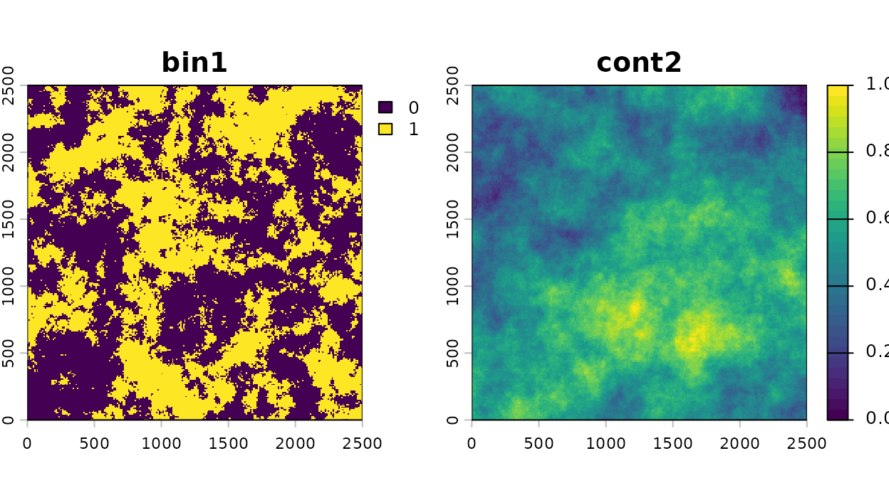
The two simulated layers used for the unmarked
examples.
# 75 sites, 5 surveys each, individual detection probability 0.5
nmix_sim <- sim_dat_unmarked(alpha = 1, # abundance intercept (log)
beta = c(0.75, -0.75), # effects of bin1, cont2
sigma = c(75, 150), # true scales (m)
kernel = "gaussian", type = "count",
n_points = 75, n_surv = 5, det = 0.5,
raster_stack = um_rast, max_D = 550,
user_seed = 555)
nmix_inputs <- kernel_prep(pts = nmix_sim$pts, raster_stack = um_rast,
max_D = 550, kernel = "gaussian", verbose = FALSE)
# Counts (sites by surveys) with the kernel-weighted site covariates
nmix_umf <- unmarkedFramePCount(y = nmix_sim$y,
siteCovs = nmix_inputs$kernel_dat)
# Starting model: ~ detection ~ abundance
nmix_mod <- pcount(~ 1 ~ bin1 + cont2, data = nmix_umf, K = 100)pcount() sums the likelihood over every possible
abundance up to K. Because the optimizer refits that model
many times, this fit takes about four minutes. The call is shown, and
the stored result is loaded.
opt_nmix <- multiScale_optim(fitted_mod = nmix_mod,
kernel_inputs = nmix_inputs)
summary(opt_nmix)
#>
#> Call:
#> multiScale_optim(fitted_mod = nmix_mod, kernel_inputs = nmix_inputs)
#>
#>
#> Kernel used:
#> gaussian
#>
#> ***** Optimized Scale of Effect *****
#>
#> Mean SE 2.5% 97.5%
#> bin1 65.9254 10.58318 44.84263 87.00818
#> cont2 116.2259 33.01406 50.45848 181.99325
#>
#>
#> ====================================
#>
#> ***** Optimized Scale of Effect -- Distance *****
#> Scale distances (map units) at 90%, two definitions.
#>
#> 2D, radius of the circle for the ideal untruncated kernel (selected):
#> Mean 2.5% 97.5%
#> bin1 141.47 96.23 186.72
#> cont2 249.42 108.28 390.55
#>
#> 1D, along a line through the point (comparison):
#> Mean 2.5% 97.5%
#> bin1 108.44 73.76 143.12
#> cont2 191.17 83.00 299.35
#>
#>
#> ====================================
#>
#> ***** Fitted Model Summary *****
#>
#>
#> Call:
#> pcount(formula = ~1 ~ bin1 + cont2, data = inputs$data, K = 100,
#> mixture = "P")
#>
#> Abundance (log-scale):
#> Estimate SE z P(>|z|)
#> (Intercept) 0.994 0.1006 9.89 4.66e-23
#> bin1 0.662 0.0574 11.55 7.77e-31
#> cont2 -0.814 0.0743 -10.95 6.73e-28
#>
#> Detection (logit-scale):
#> Estimate SE z P(>|z|)
#> 0.0424 0.138 0.308 0.758
#>
#> AIC: 996.6554
#> Number of sites: 75
#>
#>
#>
#> ***** Follow-up recommendation *****
#> Recommended `max_D`: 550
#> Recommended starting `sigma` values:
#> bin1 cont2
#> 65.9254 116.2259
#>
#> Action:
#> Use the optimized parameters as efficient starting values if refitting.
# Detection is reported on the logit scale. Convert it to a probability
plogis(coef(opt_nmix$opt_mod, type = "det"))
#> p(Int)
#> 0.5106106How to read the output: The fitted model summary is
the unmarked summary for the final model. Abundance
coefficients are on the log scale and detection is on the logit scale.
The intercept and both effects are close to the simulated values of 1,
0.75, and -0.75, and the detection probability of 0.51 is close to 0.5.
Both sigma intervals contain their true values of 75 m for
bin1 and 150 m for cont2. The interval for
cont2 is about three times as wide as the one for
bin1, so its scale is the less certain of the two. If the
summary warns that an effective distance approaches max_D,
prepare the inputs again with the larger max_D it suggests
before you interpret the scales.
plot() and plot_marginal_effects() work as
they do for a GLM. The effect panels show expected abundance by default.
type = "det" plots detection probability against the
detection covariates, so it draws nothing for this model, whose
detection is constant.
Two points matter when you compare pcount() models.
# K in this table counts parameters: 3 abundance, 1 detection, 2 sigma
aic_tab(list(opt_nmix), mod_names = "bin1 + cont2")
#>
#> Model selection based on AICc:
#>
#> K AICc Delta_AICc AICcWt Cum.Wt LL
#> bin1 + cont2 6 1001.89 0 1 1 -494.33
# K in pcount() is the upper limit of the abundance sum. Check that the
# log-likelihood does not change when you raise it
c(K_100 = logLik(nmix_mod), K_200 = logLik(update(nmix_mod, K = 200)))
#> K_100 K_200
#> -534.988 -534.988How to read the output: The two uses of the letter
are unrelated. In the table, K is the number of estimated
parameters. Each abundance and detection coefficient counts once, and
each estimated sigma adds one. The site abundances are summed out of the
likelihood and add nothing. In pcount(), K is
a computational limit. The log-likelihood here is the same at 100 and
200, so 100 was large enough. If it changes, raise K and
refit.
aic_tab() also checks that the models used the same
observations. Two models can share sites and still differ in the surveys
they use when a detection covariate has missing values, and the function
stops when that happens. If a site appears in several rows of the
unmarked frame, as in a stacked multi-year design, link the
rows to the prepared sites with the join_by argument
described in ?multiScale_optim.
Model occupancy with imperfect detection
An occupancy model from unmarked::occu() uses repeated
detection and nondetection surveys. The steps are the same. This design
uses 250 sites and takes about 10 seconds, so the stored fit is
loaded.
# 250 sites, 5 surveys each. Occupancy effects on the logit scale
occ_sim <- sim_dat_unmarked(alpha = 0.25, beta = c(-0.75, 1),
sigma = c(225, 75), # true scales (m)
kernel = "gaussian", type = "occ",
n_points = 250, n_surv = 5, det = 0.5,
raster_stack = um_rast, max_D = 800,
user_seed = 555)
occ_inputs <- kernel_prep(pts = occ_sim$pts, raster_stack = um_rast,
max_D = 800, kernel = "gaussian", verbose = FALSE)
occ_umf <- unmarkedFrameOccu(y = occ_sim$y, siteCovs = occ_inputs$kernel_dat)
# Starting model: ~ detection ~ occupancy
occ_mod <- occu(~ 1 ~ bin1 + cont2, data = occ_umf)
opt_occ <- multiScale_optim(occ_mod, occ_inputs, verbose = FALSE)
round(summary(opt_occ)$opt_scale) # sigma (m): truth is 225 and 75
#> Mean SE 2.5% 97.5%
#> bin1 308 56 198 418
#> cont2 104 72 10 245
round(coef(opt_occ$opt_mod), 2) # logit scale
#> psi(Int) psi(bin1) psi(cont2) p(Int)
#> 0.40 -0.86 0.91 0.01
plogis(coef(opt_occ$opt_mod, type = "det")) # detection probability
#> p(Int)
#> 0.5023202How to read the output: Coefficients named
psi describe occupancy on the logit scale, and
p is detection. The two landscape effects have the
simulated signs, with estimates to compare against the simulated -0.75
and 1. Each sigma interval contains its true value, yet both intervals
span more than 200 m. Even with 250 sites, this occupancy model locates
the scale of effect only roughly. Plan for larger samples than a count
model would need, and check the profile before you interpret an
occupancy scale.
Map the fitted model
kernel_scale.raster() applies each fitted kernel to the
whole raster. With scale_center = TRUE it standardizes the
result with the mean and standard deviation from the fitted data, so the
layers match what the model saw. With clamp = TRUE it holds
each layer within the range observed at the survey points.
r_scaled <- kernel_scale.raster(raster_stack = land_rast,
multiScaleR = opt, # the fitted object
scale_center = TRUE, # same scaling as the model
clamp = TRUE, # stay within the fitted range
verbose = FALSE)
plot(r_scaled)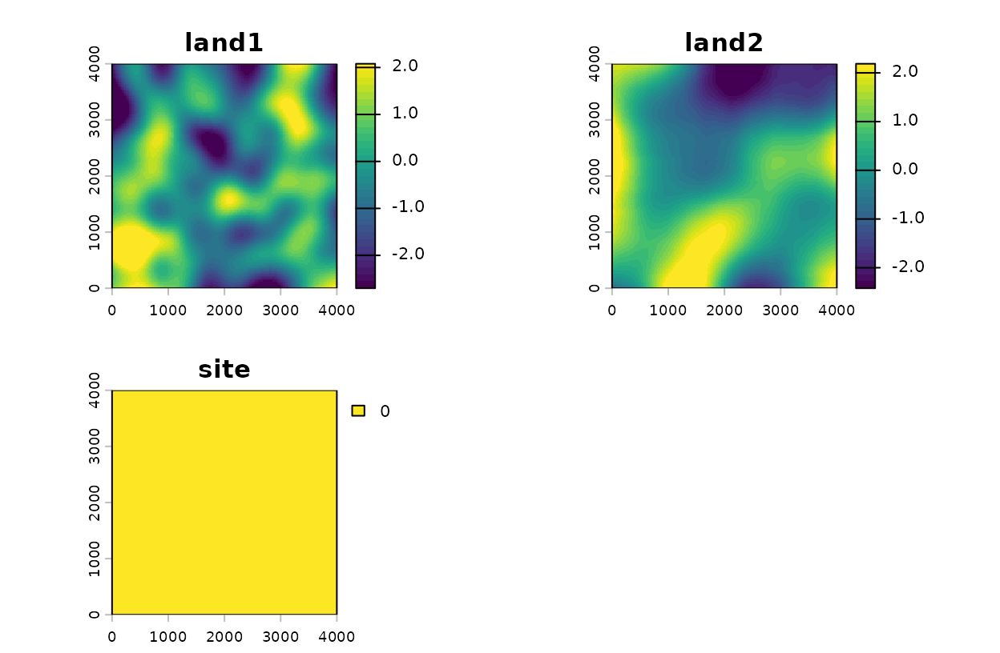
Layers for prediction from the reduced count model, in standard deviation units.
How to read these plots: land1 and
land2 are smoothed at their estimated scales, and zero is
the average survey point. The third layer, site, is
constant. site is not a raster, so the function adds a
layer of zeros to give terra::predict() every variable in
the model. Because site is centered, the map describes
average site conditions. For other models, set the value
that defines your scenario with site_values. A model with
offset(log(n_weeks)) is projected for one week unless you
set, for example, offset_values = c(n_weeks = 4).
# Expected count in every raster cell
pred <- terra::predict(r_scaled, opt$opt_mod, type = "response")
plot(pred, main = "Expected count")
points(pts, pch = 19, cex = 0.5, col = "red")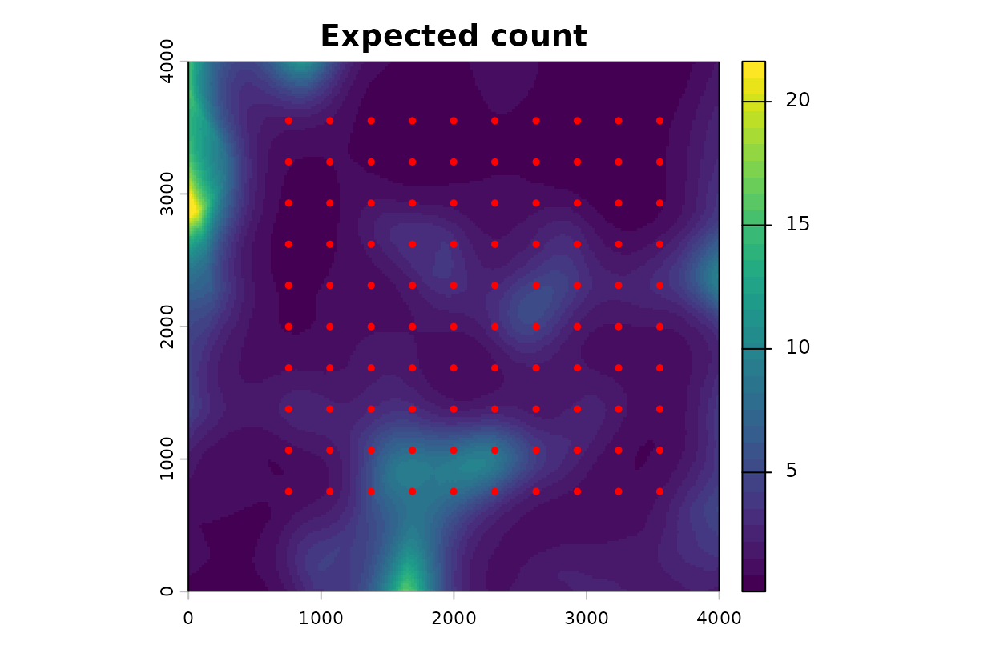
Expected count across the landscape, with survey points.
How to read this map: Each cell holds the count the model expects for a survey point at that location. Values near the border rest on kernels that extend past the raster edge, so read them with caution.
For an unmarked model, call the unmarked
prediction method through the fun argument and name the
part of the model you want.
um_scaled <- kernel_scale.raster(raster_stack = um_rast, multiScaleR = opt_nmix,
scale_center = TRUE, clamp = TRUE,
verbose = FALSE)
# type = "state" is abundance for pcount() and occupancy probability for occu()
predict_state <- function(model, data, ...) {
unmarked::predict(model, type = "state", newdata = data, ...)
}
abundance_map <- terra::predict(um_scaled, opt_nmix$opt_mod,
fun = predict_state, na.rm = TRUE)
plot(abundance_map)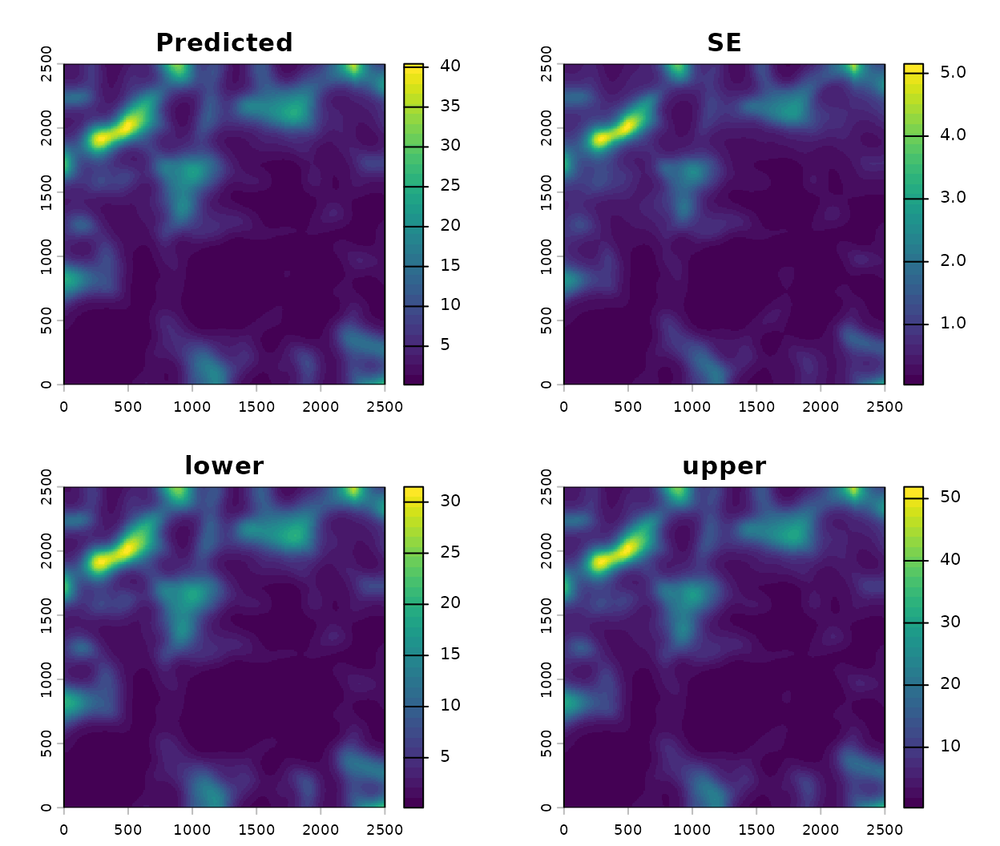
Expected abundance from the N-mixture model, with its standard error and 95% confidence limits.
How to read these maps: Predicted is
expected abundance per site, SE is its standard error, and
lower and upper are 95% confidence limits. The
map shows animals present, not animals you would expect to count, and
the limits treat the estimated scales as known.
By default the kernel is applied over a window sized from the kernel
itself, which can differ slightly from the max_D buffer
used in fitting. Set match_buffer = TRUE to use the fitting
buffer. That option needs rasters with a projected coordinate reference
system at the resolution you prepared, and na.rm = TRUE. It
works with either smoothing method, fft = TRUE or
fft = FALSE.
vignette("v03-map-predictions", package = "multiScaleR")
covers clamping and prediction beyond the sampled conditions.
Quick reference
library(multiScaleR)
library(terra)
# 1. Understand the kernel
plot_kernel(sigma = 300, kernel = "gaussian", add_label = FALSE)
kernel_dist(sigma = 300, kernel = "gaussian") # radius with 90% of the weight
# 2. Prepare the data
data("landscape_counts"); data("surv_pts")
dat <- landscape_counts
pts <- vect(surv_pts)
land_rast <- rast(system.file("extdata", "landscape.tif",
package = "multiScaleR"))
kernel_inputs <- kernel_prep(pts = pts, raster_stack = land_rast,
max_D = 1700, kernel = "gaussian")
# 3. Fit a starting model and estimate the scales
df <- data.frame(dat, kernel_inputs$kernel_dat)
mod <- glm(counts ~ site + land1 + land2, family = poisson(), data = df)
opt <- multiScale_optim(fitted_mod = mod, kernel_inputs = kernel_inputs)
# 4. Read and check the fit
summary(opt) # sigma, distance, coefficients, warnings
summary(opt, profile = TRUE) # profile-likelihood limits for sigma
kernel_dist(opt) # effective distance (map units)
plot(opt) # fitted kernels
plot(opt, prob = 0.99, add_label = FALSE) # 99% radius, no text under panels
plot_marginal_effects(opt) # expected response across covariates
plot(profile_sigma(opt, n_pts = 15)) # is each scale identified?
# 5. Guard against a stalled search (a fixed kernel screens starts by default)
fixed_inputs <- kernel_prep(pts = pts, raster_stack = land_rast,
max_D = 1700, kernel = "fixed")
set.seed(1)
opt_fixed <- multiScale_optim(mod, fixed_inputs)
# 6. Compare models (each sigma counts as a parameter)
mod_land <- glm(counts ~ land1 + land2, family = poisson(), data = df)
opt_land <- multiScale_optim(mod_land, kernel_inputs)
aic_tab(list(opt, opt_land), mod_names = c("site + land1 + land2",
"land1 + land2"))
# 7. Other families: same workflow, different starting model
mod_nb <- MASS::glm.nb(counts ~ site + land1 + land2, data = df)
df$present <- as.integer(df$counts > 0)
mod_bin <- glm(present ~ site + land1 + land2,
family = binomial(link = "logit"), data = df)
opt_nb <- multiScale_optim(mod_nb, kernel_inputs)
opt_bin <- multiScale_optim(mod_bin, kernel_inputs)
# pscl::zeroinfl(cnt ~ bin1 | cont1, dist = "negbin", data = zi_df)
# unmarked::pcount(~ 1 ~ bin1 + cont2, data = nmix_umf, K = 100)
# unmarked::occu(~ 1 ~ bin1 + cont2, data = occ_umf)
# 8. Map the fitted model
r_scaled <- kernel_scale.raster(raster_stack = land_rast, multiScaleR = opt,
scale_center = TRUE, clamp = TRUE)
pred <- terra::predict(r_scaled, opt$opt_mod, type = "response")Summary of key functions
| Function | Purpose |
|---|---|
plot_kernel() |
Draw a kernel for a chosen sigma, without a fitted model |
kernel_dist() |
Convert sigma to the distance that holds a chosen share of the kernel weight |
kernel_prep() |
Extract raster values around each survey point and prepare the optimizer inputs |
estimate_multiscale_ram() |
Estimate memory use and a safe number of parallel workers |
multiScale_optim() |
Estimate sigma for each landscape covariate together with the model coefficients |
summary() |
Report sigma, effective distance, the model table, and warnings |
plot() |
Draw the fitted kernels |
plot_marginal_effects() |
Draw the expected response across each covariate |
profile_sigma() |
Show model support across sigma for each covariate |
aic_tab(), bic_tab()
|
Rank models, counting each estimated sigma as a parameter |
kernel_scale.raster() |
Apply the fitted kernels to a raster for mapping and prediction |
sim_rast(), sim_dat(),
sim_dat_unmarked()
|
Simulate rasters and responses with known scales of effect |
See also
-
vignette("v01-quickstart", package = "multiScaleR"), the core workflow in ten minutes. -
vignette("v09-estimates-and-intervals", package = "multiScaleR"), what each estimate and interval includes and leaves out. -
vignette("v03-map-predictions", package = "multiScaleR"), mapping predictions beyond the conditions you sampled. -
vignette("v04-landscape-metrics", package = "multiScaleR")andvignette("v05-surface-metrics", package = "multiScaleR"), land-cover pattern and surface texture as covariates. -
vignette("v06-year-specific-rasters", package = "multiScaleR"), surveys from several years with a map for each. -
vignette("v08-cross-validation", package = "multiScaleR"), comparing models by how well they predict held-out data. -
vignette("v07-fitting-methods", package = "multiScaleR"), which covariate types each fitting method accepts. -
vignette("v13-bayesian-scales", package = "multiScaleR"), scales of effect that vary among years in a Bayesian model. - The help page
?"multiScaleR-glossary"defines the terms used in these vignettes.
References
Amirkhiz, R. G., R. John, and D. L. Swanson. 2023. A Bayesian approach for multiscale modeling of the influence of seasonal and annual habitat variation on relative abundance of ring-necked pheasant roosters. Ecological Informatics 75:102003.
Carpentier, F., and O. Martin. 2021. Siland a R package for estimating the spatial influence of landscape. Scientific Reports 11:7488.
Lowe, E. B., B. Iuliano, C. Gratton, and A. R. Ives. 2022. ‘Scalescape’: an R package for estimating distance-weighted landscape effects on an environmental response. Landscape Ecology 37:1771–1785.
Stuber, E. F., and L. F. Gruber. 2020. Recent methodological solutions to identifying scales of effect in multi-scale modeling. Current Landscape Ecology Reports 5:127–139.